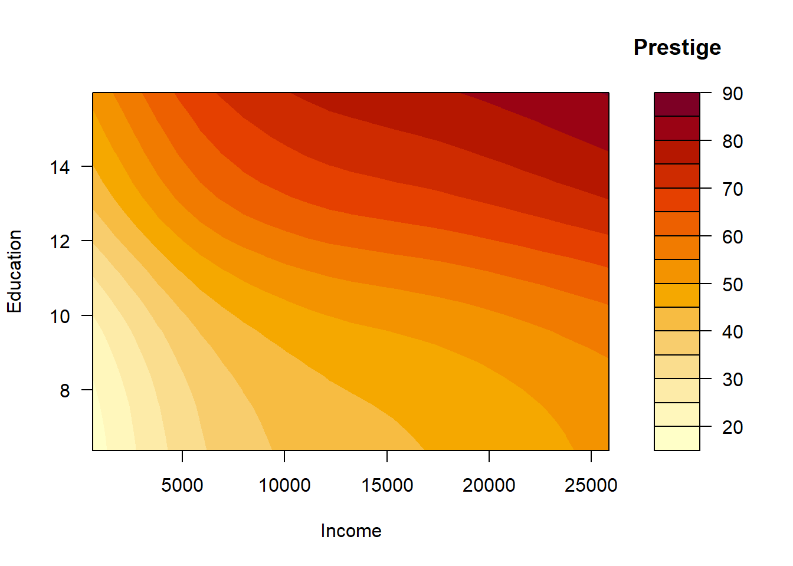
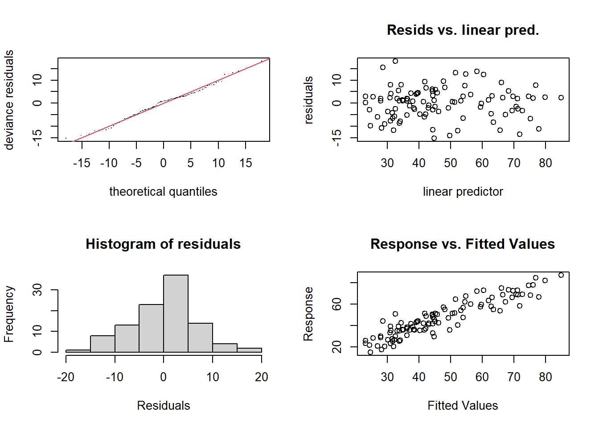

Capítulo 10 Regresión no paramétrica
No se supone ninguna forma concreta en el efecto de las variables explicativas: \[Y=f\left( \mathbf{X}\right) +\varepsilon,\] con f función “cualquiera” (suave).
Métodos disponibles en
R:Regresión local (métodos de suavizado):
loess(),KernSmooth,sm, …Modelos aditivos generalizados (GAM):
gam,mgcv, ……
10.1 Modelos aditivos
Se supone que: \[Y=\beta_{0}+f_{1}\left( \mathbf{X}_{1}\right) +f_{2}\left( \mathbf{X}_{2}\right) +\cdots+f_{p}\left( \mathbf{X}_{p}\right) +\varepsilon\text{,}\] con \(f_{i},\) \(i=1,...,p,\) funciones cualesquiera.
Los modelos lineales son un caso particular considerando \(f_{i}(x) = \beta_{i}·x\).
Adicionalmente se puede considerar una función link: Modelos aditivos generalizados (GAM)
Hastie, T.J. y Tibshirani, R.J. (1990). Generalized Additive Models. Chapman & Hall.
Wood, S. N. (2006). Generalized Additive Models: An Introduction with R. Chapman & Hall/CRC
10.1.1 Ajuste: función gam
La función gam del paquete mgcv permite ajustar modelos aditivos (generalizados) empleando regresión por splines (ver help("mgcv-package")):
library(mgcv)
ajuste <- gam(formula, family = gaussian, datos, pesos, seleccion, na.action, ...)Algunas posibilidades de uso son las que siguen:
Modelo lineal:
ajuste <- gam(y ~ x1 + x2 + x3)Modelo aditivo con efectos no paramétricos para x1 y x2, y un efecto lineal para x3:
ajuste <- gam(y ~ s(x1) + s(x2) + x3)Modelo no aditivo (con interacción):
ajuste <- gam(y ~ s(x1, x2))Modelo con distintas combinaciones:
ajuste <- gam(y ~ s(x1, x2) + s(x3) + x4)
10.1.2 Ejemplo
En esta sección utilizaremos como ejemplo el conjunto de datos Prestige de la librería car.
Se tratará de explicar prestige (puntuación de ocupaciones obtenidas a partir de una encuesta )
a partir de income (media de ingresos en la ocupación) y education (media de los años de
educación).
library(mgcv)
library(car)
modelo <- gam(prestige ~ s(income) + s(education), data = Prestige)
summary(modelo)##
## Family: gaussian
## Link function: identity
##
## Formula:
## prestige ~ s(income) + s(education)
##
## Parametric coefficients:
## Estimate Std. Error t value Pr(>|t|)
## (Intercept) 46.8333 0.6889 67.98 <2e-16 ***
## ---
## Signif. codes: 0 '***' 0.001 '**' 0.01 '*' 0.05 '.' 0.1 ' ' 1
##
## Approximate significance of smooth terms:
## edf Ref.df F p-value
## s(income) 3.118 3.877 14.61 <2e-16 ***
## s(education) 3.177 3.952 38.78 <2e-16 ***
## ---
## Signif. codes: 0 '***' 0.001 '**' 0.01 '*' 0.05 '.' 0.1 ' ' 1
##
## R-sq.(adj) = 0.836 Deviance explained = 84.7%
## GCV = 52.143 Scale est. = 48.414 n = 102En este caso la función plot representa los efectos (parciales) estimados de cada covariable:
par.old <- par(mfrow = c(1, 2))
plot(modelo, shade = TRUE) # 
par(par.old)10.1.3 Superficie de predicción
Las predicciones se obtienen también con la función predict:
pred <- predict(modelo)Por defecto predict obtiene las predicciones correspondientes a las observaciones (modelo$fitted.values). Para otros casos hay que emplear el argumento newdata.
Para representar las estimaciones (la superficie de predicción) obtenidas con el modelo se puede
utilizar la función persp. Esta función necesita que los valores (x,y) de entrada estén
dispuestos en una rejilla bidimensional. Para generar esta rejilla se puede emplear la función expand.grid(x,y) que crea todas las combinaciones de los puntos dados en x e y.
inc <- with(Prestige, seq(min(income), max(income), len = 25))
ed <- with(Prestige, seq(min(education), max(education), len = 25))
newdata <- expand.grid(income = inc, education = ed)
# Representamos la rejilla
plot(income ~ education, Prestige, pch = 16)
abline(h = inc, v = ed, col = "grey")
# Se calculan las predicciones
pred <- predict(modelo, newdata)
# Se representan
pred <- matrix(pred, nrow = 25)
persp(inc, ed, pred, theta = -40, phi = 30)
Alternativamente se podría emplear la función contour o filled.contour:
# contour(inc, ed, pred, xlab = "Income", ylab = "Education")
filled.contour(inc, ed, pred, xlab = "Income", ylab = "Education", key.title = title("Prestige"))
Puede ser más cómodo emplear el paquete modelr junto a los gráficos ggplot2 para trabajar con modelos y predicciones.
10.1.4 Comparación de modelos
Además de las medidas de bondad de ajuste como el coeficiente de determinación ajustado, también se puede emplear la función anova para la comparación de modelos.
Por ejemplo, viendo el gráfico de los efectos se podría pensar que el efecto de education podría ser lineal:
# plot(modelo)
modelo0 <- gam(prestige ~ s(income) + education, data = Prestige)
summary(modelo0)##
## Family: gaussian
## Link function: identity
##
## Formula:
## prestige ~ s(income) + education
##
## Parametric coefficients:
## Estimate Std. Error t value Pr(>|t|)
## (Intercept) 4.2240 3.7323 1.132 0.261
## education 3.9681 0.3412 11.630 <2e-16 ***
## ---
## Signif. codes: 0 '***' 0.001 '**' 0.01 '*' 0.05 '.' 0.1 ' ' 1
##
## Approximate significance of smooth terms:
## edf Ref.df F p-value
## s(income) 3.58 4.441 13.6 <2e-16 ***
## ---
## Signif. codes: 0 '***' 0.001 '**' 0.01 '*' 0.05 '.' 0.1 ' ' 1
##
## R-sq.(adj) = 0.825 Deviance explained = 83.3%
## GCV = 54.798 Scale est. = 51.8 n = 102anova(modelo0, modelo, test="F")## Analysis of Deviance Table
##
## Model 1: prestige ~ s(income) + education
## Model 2: prestige ~ s(income) + s(education)
## Resid. Df Resid. Dev Df Deviance F Pr(>F)
## 1 95.559 4994.6
## 2 93.171 4585.0 2.3886 409.58 3.5418 0.0257 *
## ---
## Signif. codes: 0 '***' 0.001 '**' 0.01 '*' 0.05 '.' 0.1 ' ' 1En este caso aceptaríamos que el modelo original es significativamente mejor.
Alternativamente, podríamos pensar que hay interacción:
modelo2 <- gam(prestige ~ s(income, education), data = Prestige)
summary(modelo2)##
## Family: gaussian
## Link function: identity
##
## Formula:
## prestige ~ s(income, education)
##
## Parametric coefficients:
## Estimate Std. Error t value Pr(>|t|)
## (Intercept) 46.8333 0.7138 65.61 <2e-16 ***
## ---
## Signif. codes: 0 '***' 0.001 '**' 0.01 '*' 0.05 '.' 0.1 ' ' 1
##
## Approximate significance of smooth terms:
## edf Ref.df F p-value
## s(income,education) 4.94 6.303 75.41 <2e-16 ***
## ---
## Signif. codes: 0 '***' 0.001 '**' 0.01 '*' 0.05 '.' 0.1 ' ' 1
##
## R-sq.(adj) = 0.824 Deviance explained = 83.3%
## GCV = 55.188 Scale est. = 51.974 n = 102# plot(modelo2, se = FALSE)En este caso el coeficiente de determinación ajustado es menor…
10.1.5 Diagnosis del modelo
La función gam.check realiza una diagnosis del modelo:
gam.check(modelo)
##
## Method: GCV Optimizer: magic
## Smoothing parameter selection converged after 4 iterations.
## The RMS GCV score gradient at convergence was 9.783945e-05 .
## The Hessian was positive definite.
## Model rank = 19 / 19
##
## Basis dimension (k) checking results. Low p-value (k-index<1) may
## indicate that k is too low, especially if edf is close to k'.
##
## k' edf k-index p-value
## s(income) 9.00 3.12 0.98 0.35
## s(education) 9.00 3.18 1.03 0.56Lo ideal sería observar normalidad en los dos gráficos de la izquierda, falta de patrón en el superior derecho, y ajuste a una recta en el inferior derecho. En este caso parece que el modelo se comporta adecuadamente.